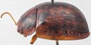
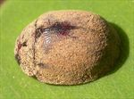
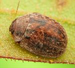
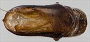
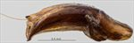
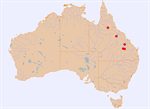

Click on images to enlarge
_SM.jpg){kind=link}

Male, Einasleigh, northern Queensland


Male, Expedition N.P., central Queensland


Male, Llanarth, central Queensland


Aedeagus, dorsal view (Expedition NP, central Queensland)


Aedeagus, lateral view (Expedition NP, central Queensland)


Distribution
Name
Reference specimen
2020-136, Einasleigh, northern Queensland.
Adult Description
Length: ♂ 5.2–6.4 mm (n=19), ♀ 5.2–6.7 mm (n=11).
Colouration:
- Head: light- to mid-brown or reddish-brown, mandibles concolorous with head with black tips; antennae uniformly straw-brown, or with antennomeres 9–11 grading fractionally darker with the darker colouration usually confined to distal extremes.
- Pronotum: often uniformly brown, concolorous with head, sometimes with anterior margin between eyes slightly darker, rarely with some vague dark brown maculae in foveal area.
- Scutellum: brown, concolorous with or fractionally darker than adjacent area of pronotum, usually with a broad border of a darker shade.
- Elytra: brown, concolorous with pronotum, often with vague, diffuse and only fractionally darker patches throughout, these darker areas rarely more defined maculae [North Queensland specimens only] that may extend in 3 partially interrupted bands from elytral base towards apex, with the most prominent situated along centre of disc, another along elytral suture and a third may be present along margin of elytral disc, area adjacent to scutellum sometimes dark brown [NQ only], humeral callus concolorous with surrounds.
- Venter & Legs: light- to mid-brown, rarely with fractionally darker patches, legs concolorous with venter, epipleura brown.
- Cuticular Wax: [Central Qld specimens] relatively thick and evenly distributed layer of light brown to mid-brown colour, with only scutellum and adjoining section of suture to elytral summit more lightly covered with cuticular wax or wax-free; [NQ specimens] coverage is often considerably thinner, more uneven and frequently with a relatively large area around scutellum and elytral summit almost wax-free.
Morphology:
- Shape: body small, somewhat flattened, greatest height viewed laterally around middle of elytral margin.
- Head: punctures moderate in size (pd ≈ 1.5–2 × ef) and evenly and densely distributed; antennae short (AL/BL: ♂ 37–43%, ♀ 35–40%), filiform.
- Pronotum: almost evenly curved transversely, very slightly explanate at extreme margins, lacking a foveal depression, an approximately round and very slightly elevated region is usually present in line with each eye, puncturation clearly impressed in discal area, evenly to very slightly unevenly distributed and moderately dense (spacing ≈ 2–3 pd), becoming much coarser towards lateral margins. Front margins join lateral margins in a smoothly rounded right-angle, with lateral margin initially straight or very lightly curved for a short length and then curving smoothly and gradually towards rear margin.
- Scutellum: lightly punctured with punctures similar to or fractionally smaller than those on adjacent area of pronotum, or smooth and unpunctured or with very fine punctures [Central Qld specimens].
- Elytra: surface evenly curved, punctures distinct and evenly and closely distributed (pd ≈ 2 pd) over almost the whole surface, interstices flat with some much smaller punctures scattered sparingly over them, interstices in posterior third only slightly more convex, sometimes appearing as short longitudinal weals, never obscuring punctures, surface continuous under humeral callus, elytral suture carinate in posterior third, lateral margins straight or slightly rounded, often with anterior third oblique. Vertical extension of epipleura considerable (HCE/PW = 0.35–0.38).
- Venter: prosternal process narrowest anteriorly and gradually widening towards posterior, rarely almost parallel-sided, open or lightly closed anteriorly, very sparse scatter of short setae at rear of prosternal process and mesoventrite, a single seta on anterior and median trochanter; front edge of metaventrite beveled, truncate.
Male Genitalia (Aedeagus):
- Dimensions: moderate (LPE/BL = 24–30%).
- Dorsal view: shaft widest at basal sulcus then narrowing fractionally before becoming almost parallel-sided or sometimes widening fractionally to about middle of ostium level, from where the sides converge towards apex in a smooth, convex arc, dorsal surface smoothly curved, dorso-median channel well-defined and quite broad but short, terminating at rear of ostium, dorso-lateral channels well developed but short, with dorsal ostial processes projecting only a little past centre of ostium, split in dorsal ostial processes is at or just slightly anterior to rear of dorso-lateral channels, rear of ostium often not well defined as dorsal ostial processes usually merge seamlessly with basal section but where visible is at about 25–30% of distance from basal sulcus to apex, ostium large, tip protruding slightly.
- Lateral view: shaft curved slightly near basal sulcus, then almost straight until very close to apex where there is a pronounced downward curve towards apex, thinning towards apex over 20% of length, tip deflexed, flagellum very thin and very loosely curved or straight.
Immature Stages
Unknown.
Similar species
- Ta36: a species that is very similar in structure and size. It usually has clearly defined dark brown or black markings in the foveal area of the pronotum and diffuse dark brown patches on the elytral disc. See Ta36 for a more detailed discussion of the differences.
- Ta175: this northern Australian species is almost indistinguishable from Ta222 on external morphological characters, but is smaller, with only a small overlap in their size distributions. Almost all specimens have dark markings, though sometimes vague and only barely darker than surrounds, on the pronotum and elytra. It has been recorded on Eucalyptus camaldulensis as well as Corymbia.
- Ta221: much darker in colour.
- Ta35:
Notes
- Taxonomy: One of the orbicularis-groups species, most closely related to Ta36.
- Distribution & Abundance: Specimens from central Queensland differ from those from the Einasleigh area of north Queensland in several respects. Geographically between these populations, two specimens found south of Charters Towers have colouration similar to the Einasleigh specimens, but an LPE/BL value that fits with the southern populations.
- Host Associations: Einasleigh specimens were all collected from the yellow bloodwood species Corymbia leichhardtii and C. peltata, while the central Queensland specimens were predominantly found on red bloodwoods. Two specimens found south of Charters Towers were collected on Corymbia setosa, a brown bloodwood.
- Morphological Variation: The aedeagus length/body length ratio spans a rather wide range in Ta222. However, the individual ranges for the Einasleigh and central Queensland populations barely overlap, providing more evidence that Ta222 is likely to consist of more than one species. Einasleigh specimens tend to have more pronounced dark areas on the pronotum and elytra, unlike the almost uniform light brown colouration of specimens from central Queensland, and their scutellum is more clearly punctured. The cuticular wax layer on central Queensland specimens is thick and very evenly distributed, while that of Einasleigh specimens tends to be thinner, less evenly distributed, often giving the specimen a very "untidy" appearance. The aedeagus, though similar in shape for the two populations, is proportionally slightly longer (LPE/BL is larger) in Einasleigh specimens.
Copyright © 2026. All rights reserved.